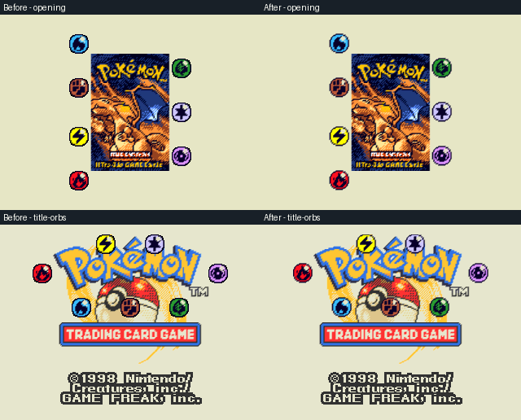
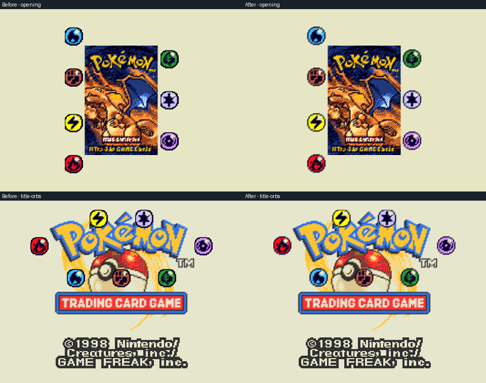
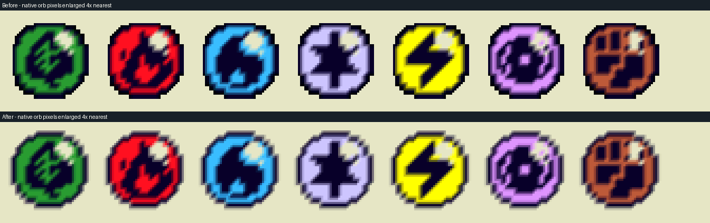

Intro Energy symbols
The source circles were intact. Tight texture boundaries and opaque filtered edges made the N64 symbols look cut off.
A transparent sampling border and orb-only alpha blending restore the edges. The artwork, animation positions and timing are unchanged.
These comparisons are actual native RDP pixels before VI filtering. Enlargements use nearest-neighbor scaling.

320 × 240 before and after
480 × 360 before and after
Energy edges enlarged 4×